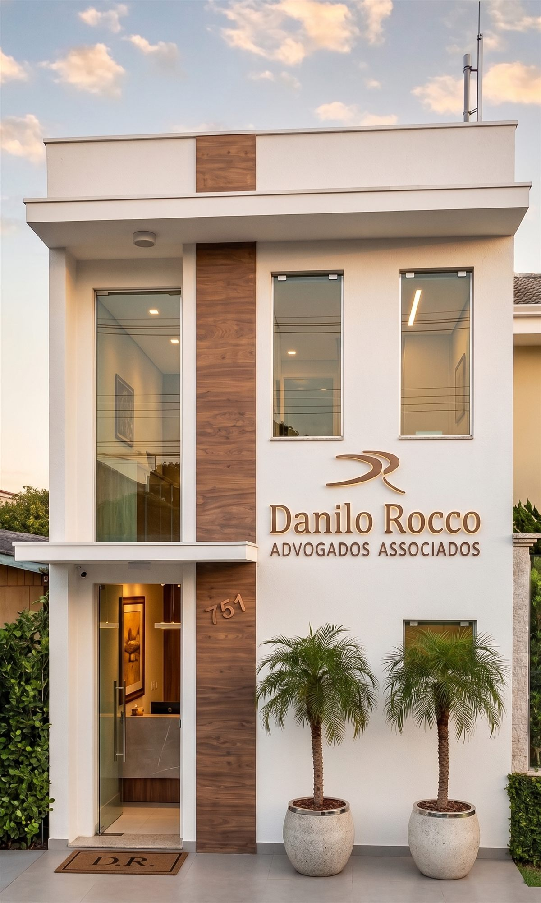

Soluções jurídicas com foco em resultado. Técnica apurada e comprometimento real com o cliente.
Contratos, responsabilidade civil e resolução de conflitos patrimoniais com rigor técnico e foco na melhor solução para o cliente.
Divórcio, inventário, guarda e planejamento sucessório com discrição, agilidade e eficiência.
Defesa exclusiva do empregador: gestão de passivo, compliance trabalhista e contencioso estratégico.
Regularização fundiária, arrendamento, questões possessórias e contratos rurais na região norte do Paraná.
Respostas claras para as dúvidas mais comuns dos nossos clientes.
Entre em contato e agende uma consulta. Atendimento ágil e orientado a resultado.
Agendar Consulta
Fundado entre 2012 e 2013 em Colorado, Paraná, o escritório de Danilo Andrigo Rocco — inscrito na OAB/PR sob o n.º 34.498 — nasceu da convicção de que advocacia de qualidade exige tanto técnica apurada quanto comprometimento real com o cliente.
Com trajetória iniciada em 2003, o Dr. Danilo construiu uma prática sólida nas áreas cível, familiar, trabalhista e agrária, com ênfase no atendimento a empresas, empregadores e produtores rurais da região norte do Paraná.
O escritório alia a agilidade de uma estrutura enxuta à profundidade técnica de um profissional experiente — entregando soluções jurídicas claras, diretas e orientadas a resultado.